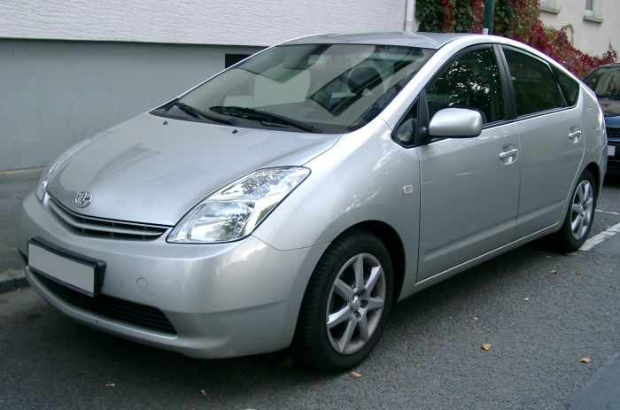
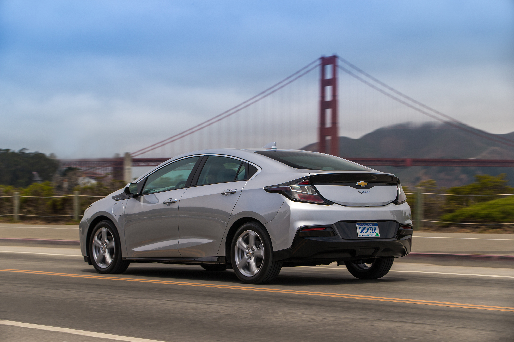
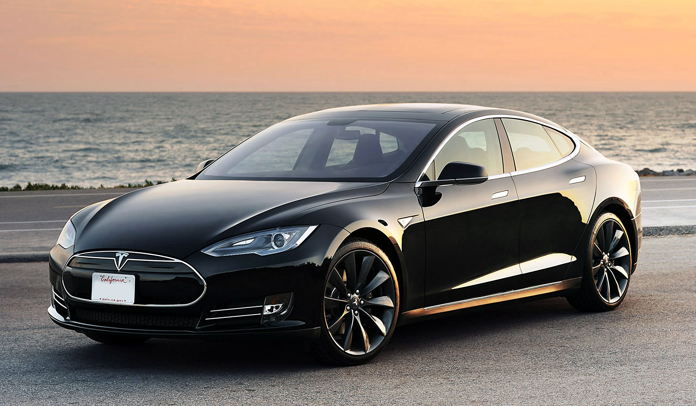
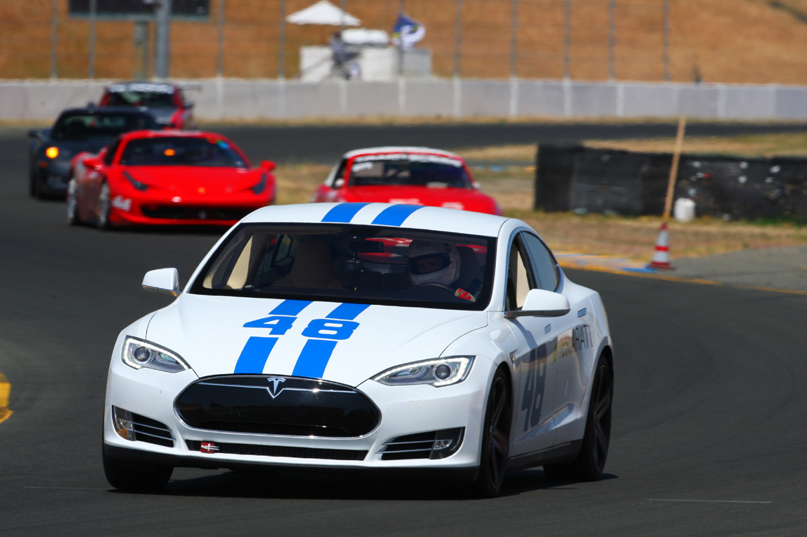

Viitorul este electric! Din ce in ce mai multe companii construiesc masini electrice, acestea avand un adevarat viitor potential.
Mai intai s-a inceput cu masnile hibrid, avand motorizare dubla si scazand consumul de carburant mai ales in oras, unde nu este nevoie de putere mare.
Chevrolet Volt 2016 - Viitorul e aici!
Tesla este singura companie auto din Silicon Valley, fondata de Elon Musk, un inginer, inventator, antreprenor, investitor și programator canadiano-american. Tesla a introdus un sistem de autonomie printr-un simplu update de software. Mai multe detalii pe pagina Self-Driving
Din totdeauna s-au facut curse de masini, asa ca de ce nu si electric?